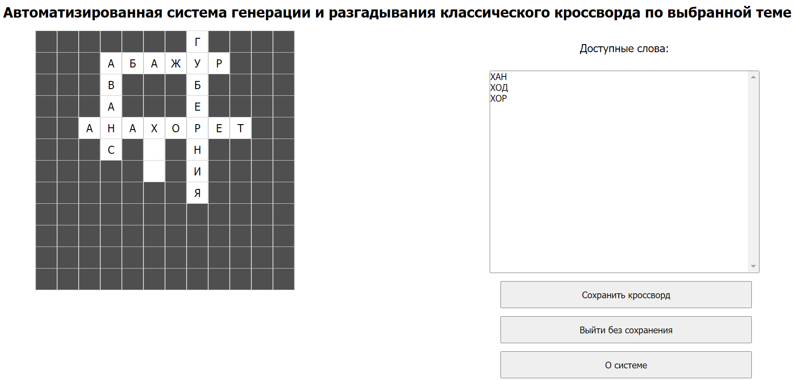
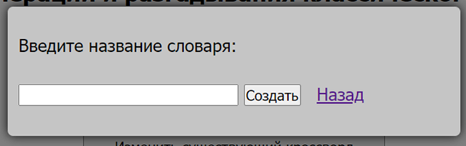

В системе предусмотрены два режима работы: режим Игрока и режим Администратора.
Перед тем как приступить к работе с кроссвордом, пользователю необходимо войти в систему под своим логином и паролем. Если вход на сайт происходит первый раз, то необходимо пройти регистрацию - придумать логин и пароль. После входа в систему игрок попадает в главное меню, где есть возможность выбрать кроссворд для разгадывани, получить информацию о системе, о разработчиках или выйти из профиля.
При выборе разгадывания кроссворда открывается страница с выбором кроссвордов, если кроссворд ещё не был разгадан, то он помечен как новый. После выбора кроссворда открывается страница с разгадыванием. Для того, чтобы увидеть определение понятия конкретного слова нужно нажать на любую его ячейку. Справа отобразится определение понятия. Чтобы получить подсказку нужно кликнуть на ячейку и нажать получить подсказку, тогда в ячейке появится правильная буква. Количество доступных подсказок показано под кроссвордом. Чтобы проверить разгаданный кроссворд нужно нажать кнопку проверить кроссворд. Если кроссворд разгадан верно, то появися уведомление об успешном разгадывании. Если кроссворд разгадан до конца, то можно выйти с сохранением изменений или без
Администратор может создавать и изменять кроссворды, словари понятий, переходя на соответствующие пункты меню.
Для создания кроссворда необходимо ввести его название, размер сетки, словарь и указать автоматическая генерация или ручная. При автоматической генерации администратор перейдет сразу к редактированию словаря, сгенерированного системой. Ручная генерация позволит самостоятельно добавлять слова на сетку. Для этого нужно выделить область сетки, где должно быть размещено слово. Справа появятся доступные варианты для добавления. После выбора из них слово добавится на сетку.
При редактировании уже существующего кроссворда администратор может удалять и добавлять слова на сетку. После изменений в кроссворде нужно нажать кнопку "Сохранить изменения", иначе все сделанные изменения не сохранятся.
Для создания словаря понятий необходимо ввести имя словаря.
При редактировании словаря у администратора есть возможность добавить в словарь новое понятие, которое должно быть уникальным. Для редактирования понятия необходимо нажать на знак редактирования около понятия. Для удаления - на значок корзины
Также при работе со словарем есть возможность сортировки словаря и фильтрация понятий в нем